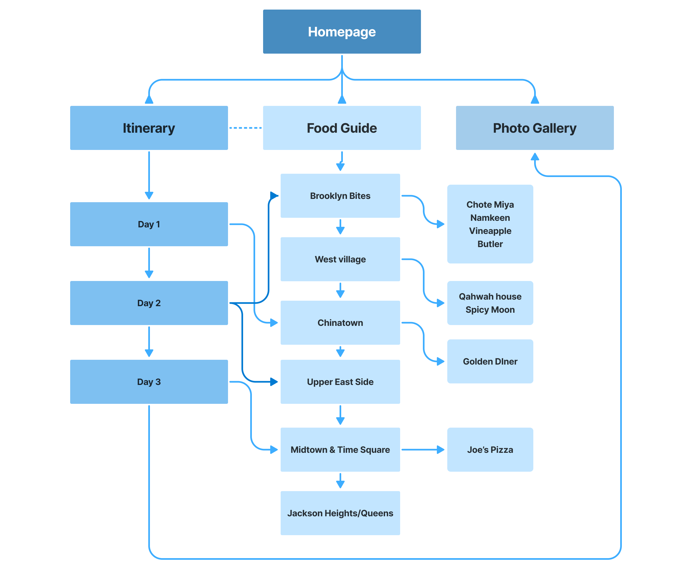
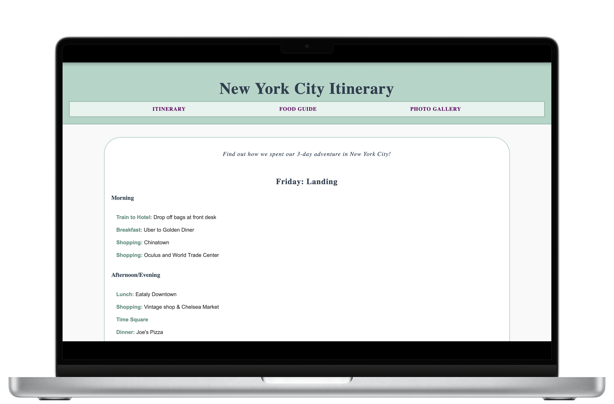

New York City Itinerary
This project was born out of a real-life need: planning a 3-day NYC trip for my cousin, a first-time visitor. I wanted to create a resource that was easy to follow, visually pleasing, and tailored to her interests — including some personalized options for food spots, aesthetic spaces, and cultural landmarks.
Project Overview
Role: UX Designer and Web Developer
Goal: Create an easy-to-follow, 3-day itinerary to provide a fullfilling experience for first-time New York City travlers.
Approach: Top-Down — Building this website from scratch reuired me to start with a big picture idea before focusing on the specific content and interactions needed to make it happen
User Research
Because this itinerary started with the intention of creating a seamless trip for my cousin, I took an approach to personalize it to her needs. With this in mind, making sure I understood what she wanted to get out of the trip was important.
I interviewed my cousin (the user) to understand:
- Her dietary restrictions
- Interest in cultural landmarks and aesthetic locations
- Need for easy navigation and clear directions
I also researched:
- Top-rated resteraunts to fit her interests and curiosities
- Used Google Maps to plan eficient routes
- Browsed NYC travel blogs and Reddit for real user insights
User Needs
- Clarity - Easy-to-understand layout with clearly organized days and places.
- Time Efficiency - Efficiently planned days that avoud unnecessary backtracking as best as possible.
- Comfort - options that feel safe, family-friendly, and welcoming.
- Visual Cues - Photos and maps to get a sense of the environment ahead of time.
- Access to more information - Links to the resteraunt website for a quick access to their menus.
Goals
- Explore New York City without stress
- Eat at places that offer a variety cultural foods and/or are Instagram-worthy
- Make the most of a 3-day weekend
- Trust the itinerary
- Experience a memorable, personalized trip
Information Architecture
Final Design
Key Features & Functionality
- Landing page made to be a clear day-by-day navigation
- Responsive Layout with touch-friendly elements
- Good selection of food recomendations with photos and descriptions
- Photo Gallery for memories or visual inspiration
Reflection
This project really made me think like both a traveler and a designer. I wasn’t just building a site — I was imagining what it would feel like to actually use it while walking through NYC, hungry and maybe a little lost. It reminded me how important it is to design with empathy, even for fun or personal projects. Thinking about user context (like phone screens, walking directions, or halal food needs) made the whole experience feel more real and meaningful.
Challenges
- Too Many Options, Not Enough Time - It took me a lot of brain power to narrow down the multitude of things to do in NYC into a 3-day trip.
- Keeping it Simple - It was a challenge to avoid clutter while still trying to make it visually interesting.
- Limited Time for Deep User Testing - Since this was a personal project with one primary user, there was a restriction in gathering diverse feedback.